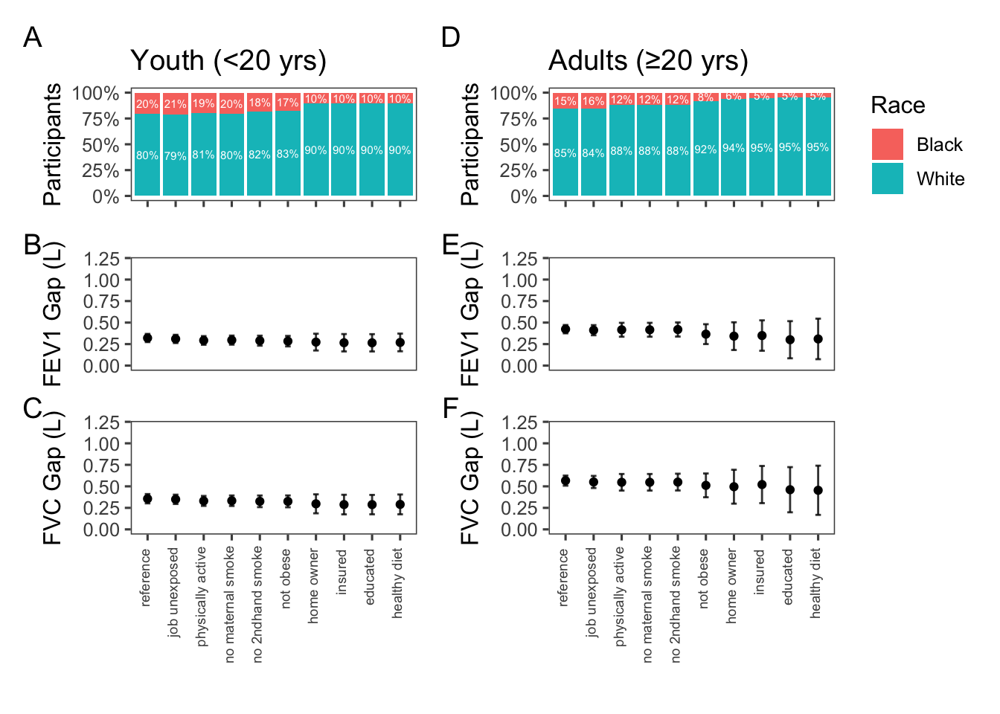

![]()
flowchart TD
B[n=30,442] -- excluded missing FEV1 or FVC --> C[n=20,050]
C -- excluded low quality spirometry --> D[n=17,032]
D -- included patients self-identified as Black or White --> E[n=10,457]
E -- excluded smokers, and those with respiratory diagnoses or symptoms --> F[n=4,843]
F -- Adults --> A0[n=2,785]
F -- Youth --> Y0[n=2,058]
Who is healthy anyways? The contribution of measurable social determinants to effect of health disparities on racial gaps in lung function
Abstract
RATIONALE: Racialized populations disproportionately experience exposures that impair lung function. Race-neutral reference equations mitigate bias due to disparities at the cost of reduced precision. However, it is unclear what proportion of racial gaps in lung function is due to known disparities. Previous studies on the racial gap in lung function between White and Black Americans have attributed 35-39% of the gap in adults to sitting height, 2.5-7.5% to poverty, and 2-4.7% to education. In children, sitting height reportedly accounted for 42-53% of the racial gap, while diet and socio-economic accounted for 7-10% of the gap. We hypothesized that disproportionate impact of environmental and social exposures that is measurable in NAHNES data could help explain a larger proportion of racial gaps in lung function than previously reported. Quantifying the contribution of measurable disparities to racial differences in lung function can inform the debate on the proper assessment of lung function impairment across racial groups.
METHODS: We defined reference populations from 18,359 Black and White NHANES 2007-2012 participants. Starting with non-smokers without respiratory symptoms or diagnoses, we sequentially excluded those with confirmed occupational exposure to dust/fumes, physical inactivity, maternal tobacco use, obesity, no home ownership, no insurance, lower education, and self-reported unhealthy diet. Across successive populations, we compared average age-, sex-, and height-adjusted differences in FEV1 and FVC between Black and White adults (≥20) and youth (<20).
RESULTS: From the base reference population to the most restrictive, the percentage of Black participants decreased from 19% to 9% in youth and 14% to 4% in adults. The racial gap in FEV1 and FVC was reduced by 25% and 26% in children and youth, and by 26% and 19% in adults.
CONCLUSIONS: The disparities investigated herein explain up to 25% of the racial gap in lung function among American youth. Further research on adults is required.
Background
Racial gaps in measures of lung function have been documented since the late 18th century. For more than a hundred years, pro-slavery scientists in the US weaponized the lower observed lung function in Black people to justify White supremacy [1]. This racist view was eventually replaced with the notion of innate but benign racial differences in lung function, likely attributable to anthropometric differences. In the twentieth century and with the growing adoption of pre-employment spirometry as a test of fitness for certain workers, occupation standards in the US proposed race-based adjustment of spirometry results to prevent hiring discrimination against Black people [2]. Following this, in 2005, the American Thoracic Society (ATS) and the European Respiratory Society (ERS) recommended race-specific reference equations for interpreting pulmonary function tests [3]. In the past two decades, race-based lung function reference values have been widely used to guide diagnosis, assessment, and management of lung diseases, decide priority for lung transplant surgery, as a fitness for employment eligibility in some industries, and to monitor occupational health and adjudicate insurance claims.
In recent years, increased awareness of the history of structural racism and disparities affecting racialized populations has led to calls to revisit race-based equations in medicine and examine their potential to perpetuate bias and exacerbate existing health disparities [4]. Of note is the growing body of literature suggesting that racialized populations experience a disproportionate level of harmful environmental exposures that might hinder lung growth and lower lung function [5].
Spirometry reference equations are developed with data from “healthy” volunteers, who do not smoke, are asymptomatic, and have not been diagnosed with lung diseases [6, 7]. This rather loose definition of what constitutes as healthy could potentially lead to a biased reference populations in which White volunteers have higher lung function values, simply because they were less likely to have been exposed to environmental and social factors that diminish lung function.
Indeed, the effects of social determinants of health (SDoH) on lung function have been discussed in the literature for decades. The 1991 ATS official statements on the interpretative strategies for lung function testing discussed the effects of environmental factors, smoking, indoor and outdoor air pollution, occupational exposures, built environment and socio-economic factors as the main sources of between-individual variability in lung function[8]. The statement also mentions racial differences that persist after adjusting for age, height, smoking, air pollution, and altitude, and hypothesizes that these differences may in part be due to body measurements, environmental differences, nutrition, physical activity, and socioeconomic factors [8]. A 1986 review of between-individual variation in FVC attributed up to 30% of variation to biological sex, up to 30% to age, height, and weight, 10% to race, 3% to measurement error, and 27% to unexplained factors[9]. Our study focuses on the proportion of variability that was historically attributed to race can be explained by social determinants of health.
Our understanding of the contribution of environmental and social factors to racial differences in lung function remains limited. A 2022 systematic review found two representative studies in the US population[10], one focused on adults[11] and one on children[12]. The study on adults attributed 35-39% of the racial gap in lung function to sitting height, 2.5-7.5% to poverty, and 2.0-4.7% to education [11]. In children, sitting height accounted for 42-53% of the racial gap, while diet and socio-economic status accounted for 7-10% of the racial differences [12]. However, these studies consider a limited set of social exposures, typically comprised of poverty index, BMI, education, employment, and household size and were conducted using older US National Health and Nutrition Examination Survey (NHANES) III survey data (1988–1994).
Our study focuses on whether the proportion of variability that was historically attributed to race can be explained by social determinants of health. We hypothesized that accounting for a more comprehensive set of social and environmental exposures in newer iterations of NHANES data could explain a larger proportion of racial gaps in lung function than previously reported. We have presented a preliminary version of these results in the 2024 European Respiratory Congress in Vienna [13].
Methods
We used data from three cycles of NHANES (2007-2012) with appropriate sampling weights to account for complex survey design. We included self-identified Black and White individuals with valid height recording and baseline spirometry that either met or exceeded ATS collection standards. We defined 10 increasingly healthier reference populations. Starting from the base reference population of non-smokers with no diagnoses of lung diseases or respiratory symptoms, we sequentially excluded those with confirmed occupational exposures, physical inactivity, maternal smoking, obesity (defined as body-mass-index≥30), no home ownership, no insurance, lower education, and self-declared unhealthy diet.
Occupational exposure was defined as having ever been exposed to either mineral dusts (OCQ510), organic dusts (OCQ530), exhaust fumes (OCQ550), or other fumes (OCQ570) at work. Indivdiuals who did not have at least 10 minutes of vigorous or moderate activity in a typical week, either for work or recreationally (PAQ605, PAQ620, PAQ650, PAQ665), were considered physically inactive. Lower educated individuals were defined as adults 20 years of age and older with a high school or a GED degree or lower (DMDEDUC2), and 6-19 years old who were neither in school nor on vacation from school (DMDSCHOL). Individuals with self-declared their dietary health as either poor or fair (DBQ700) were considered to have a unhealthy diet.
For each reference population, the racial gap was calculated as the average difference between Black and White populations adjusted by age, height, and sex in a linear regression. We evaluated the reduction in the racial gap separately for youth (<20 yrs) and adults (≥20 yrs). The distinction between adults and youth was made based on how NHANES data is structured; for example, the educational level variable is only available for those 20 years of age and older.
In the sensitivity analyses, we evaluated the results separately for males and females and those born inside the US. We also evaluated the proportion of the racial gap in lung function that can be explained by poverty alone.
All data preparation and analysis was performed in R v4.4.2 using reproducible Quarto documents. A fully reproducible analysis code is publicly available at https://github.com/aminadibi/who-is-healthy-anyways/.
Results
Of the 18,359 self-identified Black and White participants in NHANES 2007-2012, 10,457 participants had valid height and high quality spirometry. This included 7,533 adults and 2,924 youth.
The flow of participants is shown in Figure 1. Participant flow across successive reference populations is shown in Figure S1.
Characteristics of participants is summarized in Table 1 .
| Adults (N=2785) |
Youth (N=2058) |
Overall (N=4843) |
|
|---|---|---|---|
| Age (years) | |||
| Mean (SD) | 46 (16) | 12 (3.8) | 31 (21) |
| Median [Min, Max] | 45 [20, 79] | 12 [6.0, 19] | 25 [6.0, 79] |
| Race and Ethnicity | |||
| Non-Hispanic Black | 968 (34.8%) | 921 (44.8%) | 1889 (39.0%) |
| Non-Hispanic White | 1817 (65.2%) | 1137 (55.2%) | 2954 (61.0%) |
| Biological Sex at Birth | |||
| Female | 1559 (56.0%) | 1073 (52.1%) | 2632 (54.3%) |
| Male | 1226 (44.0%) | 985 (47.9%) | 2211 (45.7%) |
| FEV1 (L) | |||
| Mean (SD) | 3.2 (0.88) | 2.6 (1.0) | 2.9 (0.98) |
| Median [Min, Max] | 3.1 [0.82, 6.9] | 2.4 [0.82, 6.1] | 2.9 [0.82, 6.9] |
| FVC (L) | |||
| Mean (SD) | 4.0 (1.1) | 3.0 (1.2) | 3.6 (1.2) |
| Median [Min, Max] | 3.9 [1.3, 7.9] | 2.9 [1.0, 7.2] | 3.5 [1.0, 7.9] |
| Smoker in household | |||
| No | 2624 (94.2%) | 1679 (81.6%) | 4303 (88.8%) |
| Yes | 151 (5.4%) | 370 (18.0%) | 521 (10.8%) |
| Missing | 10 (0.4%) | 9 (0.4%) | 19 (0.4%) |
| Maternal smoke during pregnancy (For youth) | |||
| No | 0 (0%) | 1280 (62.2%) | 1280 (26.4%) |
| Yes | 0 (0%) | 260 (12.6%) | 260 (5.4%) |
| Missing | 2785 (100%) | 518 (25.2%) | 3303 (68.2%) |
| Occupational Exposure to Mineral Dusts | |||
| No | 2049 (73.6%) | 250 (12.1%) | 2299 (47.5%) |
| Yes | 676 (24.3%) | 51 (2.5%) | 727 (15.0%) |
| Missing | 60 (2.2%) | 1757 (85.4%) | 1817 (37.5%) |
| Occupational Exposure to Organic Dusts | |||
| No | 2240 (80.4%) | 247 (12.0%) | 2487 (51.4%) |
| Yes | 487 (17.5%) | 54 (2.6%) | 541 (11.2%) |
| Missing | 58 (2.1%) | 1757 (85.4%) | 1815 (37.5%) |
| Occupational Exposure to Exhaust Fumes | |||
| No | 2179 (78.2%) | 271 (13.2%) | 2450 (50.6%) |
| Yes | 549 (19.7%) | 30 (1.5%) | 579 (12.0%) |
| Missing | 57 (2.0%) | 1757 (85.4%) | 1814 (37.5%) |
| Occupational Exposure to Other Fumes | |||
| No | 2046 (73.5%) | 248 (12.1%) | 2294 (47.4%) |
| Yes | 682 (24.5%) | 53 (2.6%) | 735 (15.2%) |
| Missing | 57 (2.0%) | 1757 (85.4%) | 1814 (37.5%) |
| Income to Poverty Ratio | |||
| Mean (SD) | 3.1 (1.6) | 2.3 (1.6) | 2.8 (1.7) |
| Median [Min, Max] | 3.3 [0, 5.0] | 1.9 [0, 5.0] | 2.7 [0, 5.0] |
| Missing | 183 (6.6%) | 120 (5.8%) | 303 (6.3%) |
| Home Owner | |||
| Yes | 11 (0.4%) | 10 (0.5%) | 21 (0.4%) |
| No | 2774 (99.6%) | 2048 (99.5%) | 4822 (99.6%) |
| Education Level for Adults | |||
| 9-11th grade | 238 (8.5%) | 0 (0%) | 238 (4.9%) |
| College graduate or above | 1011 (36.3%) | 0 (0%) | 1011 (20.9%) |
| High school graduate | 563 (20.2%) | 0 (0%) | 563 (11.6%) |
| Less than 9th grade | 56 (2.0%) | 0 (0%) | 56 (1.2%) |
| Some college or AA degree | 915 (32.9%) | 0 (0%) | 915 (18.9%) |
| Missing | 2 (0.1%) | 2058 (100%) | 2060 (42.5%) |
| Currently Attending School (for youth) | |||
| Between grades | 0 (0%) | 310 (15.1%) | 310 (6.4%) |
| In school | 0 (0%) | 967 (47.0%) | 967 (20.0%) |
| Missing | 2785 (100%) | 781 (37.9%) | 3566 (73.6%) |
| Self-evaluated Diet Health | |||
| Excellent | 292 (10.5%) | 43 (2.1%) | 335 (6.9%) |
| Fair | 494 (17.7%) | 108 (5.2%) | 602 (12.4%) |
| Good | 1208 (43.4%) | 227 (11.0%) | 1435 (29.6%) |
| Poor | 109 (3.9%) | 22 (1.1%) | 131 (2.7%) |
| Very good | 681 (24.5%) | 95 (4.6%) | 776 (16.0%) |
| Missing | 1 (0.0%) | 1563 (75.9%) | 1564 (32.3%) |
| Vigorous Activity at Work (10 min/week) | |||
| No | 2304 (82.7%) | 901 (43.8%) | 3205 (66.2%) |
| Yes | 481 (17.3%) | 116 (5.6%) | 597 (12.3%) |
| Missing | 0 (0%) | 1041 (50.6%) | 1041 (21.5%) |
| Moderate Activity at Work (10 min/week) | |||
| No | 1722 (61.8%) | 651 (31.6%) | 2373 (49.0%) |
| Yes | 1063 (38.2%) | 366 (17.8%) | 1429 (29.5%) |
| Missing | 0 (0%) | 1041 (50.6%) | 1041 (21.5%) |
| Recreational Vigorous Activity (10 min/week) | |||
| No | 1944 (69.8%) | 400 (19.4%) | 2344 (48.4%) |
| Yes | 841 (30.2%) | 617 (30.0%) | 1458 (30.1%) |
| Missing | 0 (0%) | 1041 (50.6%) | 1041 (21.5%) |
| Recreational Moderate Activity (10 min/week) | |||
| No | 1404 (50.4%) | 489 (23.8%) | 1893 (39.1%) |
| Yes | 1381 (49.6%) | 528 (25.7%) | 1909 (39.4%) |
| Missing | 0 (0%) | 1041 (50.6%) | 1041 (21.5%) |
| Body Mass Index | |||
| Mean (SD) | 29 (6.9) | 21 (5.7) | 26 (7.6) |
| Median [Min, Max] | 28 [15, 73] | 20 [13, 54] | 25 [13, 73] |
| Missing | 8 (0.3%) | 15 (0.7%) | 23 (0.5%) |
From the base reference population to the most restrictive, the number of included participants decreased from 4,843 to 1,099, while the proportion of Black participants decreased from 19% to 9% in youth and 14% to 4% in adults, as shown in Figure 2. After excluding those with various social and environmental exposures, the racial gap in FEV1 and FVC was reduced by 26% and 19% in adults, and 25% and 26% in youth.

Secondary and Sensitivity Analyses
Biological Sex
We also looked at the racial gap in lung function from the most permissive to the most restrictive reference population, separately for females and males. In females, the proportion of Black participants decreased from 20% to 10% in youth and 15% to 5% in adults. After excluding those with various social and environmental exposures, the racial gap in FEV1 and FVC was reduced by 27% and 20% in adults, and 16% and 19% in youth, respectively (appendix Figure S2). In males, the proportion of Black participants decreased from 17% to 8% in youth and 12% to 4% in adults. After excluding those with various social and environmental exposures, the racial gap in FEV1 and FVC was reduced by 14% and 8% in adults, and 35% and 34% in youth (appendix Figure S3).
Home Ownership, BMI, and Occupation
After excluding patients solely based on home ownership, BMI, and occupation, the proportion of Black participants decreased from 19% to 10% in youth and 14% to 11% in adults, as shown in Figure 3. After limiting reference populations to non-obese homeowners without occupational exposures to dusts and fumes the racial gap in FEV1 and FVC was reduced by 20% and 16% in adults, and 21% and 19% in youth.

In the supplementary material, we also explored the intersection of self-identified race and country of origin (Figure S4).
Discussion
Our results reinforce the critical role of environmental, social, and lifestyle factors in shaping health outcomes and suggest that a substantial portion of the racial gap in lung function can be explained by SDoH, with up to 26% of the gap in adults, and as much as 35% in males under 20 years of age, attributed to these factors. Our findings attribute a higher proportion of racial differences in lung function to social and environmental exposures than previously reported [11, 12].
The higher explained proportion of the racial gap in lung function among individuals born in the US (i.e., up to 36% of the racial gap in adult FEV1 explained by the studied exposures) suggests that US-specific systemic factors such as racism, segregation, red-zoning, and other socio-economic inequities profoundly impact lung health. This aligns with several studies have reported significantly higher health burdens in US-born racialized people compared to racialized immigrants to the US [14, 15] and the growing body of literature that implicates historical and structural inequities, such as redlining and differential environmental exposures, in perpetuating health disparities among racialized communities in general [16–19].
Our analysis revealed that excluding individuals based on home ownership, BMI, and occupational exposures accounts for a significant portion of the explainable racial gap, indicating that financial stability, physical health, and work-related factors are pivotal contributors to lung function disparities.
Our study highlights the necessity for further research to comprehensively understand the interplay between SDoH, environmental exposures, and lung function across different populations. Future studies should aim to incorporate a wider array of SDoH, such as stress levels, access to healthcare, neighborhood safety, and intergenerational wealth effects. There is also a need for longitudinal studies that can elucidate causal pathways and the potential impact of policy changes on reducing health disparities. Moreover, exploring the intersectionality of race, gender identity, and other demographic factors could provide a more nuanced understanding of how diverse identities influence lung health outcomes. Expanding research to include international cohorts could enhance the generalizability of findings and support the development of global strategies to address lung health disparities.
Certain limitations must be acknowledged. Our reliance on NHANES data restricts generalizability beyond the United States and hinders our ability to explore nuanced race and ethnicity groups. Incomplete understand and limited nature of available data also limits our assessment of complex social and environmental exposures, such as effects of racism, intergenerational wealth effects, life-course exposure to pollutants, violence, stress, and allostatic load. Additionally, the absence of data on gender identity prevented us from analyzing potential differential effects.
These findings have important implications for clinical practice and policy. Our results show a larger than previously known effect of complex exposures on racial gaps in lung function, and the true proportion is likely higher than our estimates. However, the racial gaps in lung function cannot yet be completely explained by disparities in complex exposures. The previous guidelines that recommended race-specific reference equations for pulmonary function testing risk assumed racial gaps in lung function were normal and reinforced inequities by perpetuating the notion of race as a biological determinant, rather than acknowledging the role of modifiable social factors[20]. However, the new race-averaged reference equations also fail to account for our understanding of the the effect size of social and environmental exposures on lung function.
Conclusions
Our study underscores the significant influence of social determinants of health on lung function and shows that a larger proportion of racial gaps in lung function can be explained by social determinants of health than previously reported. However, we were unable to account for all racial differences in lung function based on measured social determinants of health in NHANES.
References
1
Braun L, Grisson R. Race, Lung Function, and the Historical Context of Prediction Equations. JAMA Network Open [Internet] 2023; 6: e2316128. Available from: http://dx.doi.org/10.1001/jamanetworkopen.2023.16128.
2
Townsend MC, Cowl CT. U.S. Occupational Historical Perspective on Race and Lung Function. American Journal of Respiratory and Critical Care Medicine [Internet] 2022; 206: 789–790. Available from: http://dx.doi.org/10.1164/rccm.202203-0565le.
3
Pellegrino R. Interpretative strategies for lung function tests. European Respiratory Journal [Internet] 2005; 26: 948–968. Available from: http://dx.doi.org/10.1183/09031936.05.00035205.
4
Vyas DA, Eisenstein LG, Jones DS. Hidden in Plain Sight Reconsidering the Use of Race Correction in Clinical Algorithms. Malina D, ed. New England Journal of Medicine [Internet] 2020; 383: 874–882. Available from: http://dx.doi.org/10.1056/NEJMms2004740.
5
Marciniuk DD, Becker EA, Kaminsky DA, et al. Effect of Race and Ethnicity on Pulmonary Function Testing Interpretation. CHEST [Internet] 2023; 164: 461–475. Available from: http://dx.doi.org/10.1016/j.chest.2023.03.026.
6
Quanjer PH, Stanojevic S, Cole TJ, et al. Multi-ethnic reference values for spirometry for the 395-yr age range: the global lung function 2012 equations. European Respiratory Journal [Internet] 2012; 40: 1324–1343. Available from: http://dx.doi.org/10.1183/09031936.00080312.
7
Bowerman C, Bhakta NR, Brazzale D, et al. A Race-neutral Approach to the Interpretation of Lung Function Measurements. American Journal of Respiratory and Critical Care Medicine [Internet] 2023; 207: 768–774. Available from: http://dx.doi.org/10.1164/rccm.202205-0963OC.
8
Lung Function Testing: Selection of Reference Values and Interpretative Strategies. American Review of Respiratory Disease [Internet] 1991; 144: 1202–1218. Available from: http://dx.doi.org/10.1164/ajrccm/144.5.1202.
9
Becklake MR. Concepts of normality applied to the measurement of lung function. The American Journal of Medicine [Internet] 1986; 80: 1158–1164. Available from: http://dx.doi.org/10.1016/0002-9343(86)90678-9.
10
Holland R, Bowerman C, Stanojevic S. The Contribution of Anthropometry and Socioeconomic Status to Racial Differences in Measures of Lung Function. CHEST [Internet] 2022; 162: 635–646. Available from: http://dx.doi.org/10.1016/j.chest.2022.04.017.
11
HARIK-KHAN RAIDAI, FLEG JEROMEL, MULLER DENISC, et al. The Effect of Anthropometric and Socioeconomic Factors on the Racial Difference in Lung Function. American Journal of Respiratory and Critical Care Medicine [Internet] 2001; 164: 1647–1654. Available from: http://dx.doi.org/10.1164/ajrccm.164.9.2106075.
12
Harik-Khan RI. Racial Difference in Lung Function in African-American and White Children: Effect of Anthropometric, Socioeconomic, Nutritional, and Environmental Factors. American Journal of Epidemiology [Internet] 2004; 160: 893–900. Available from: http://dx.doi.org/10.1093/aje/kwh297.
13
Adibi A, Carlsten C, Brigham E, et al. The effect of health disparities on racial gaps in lung function. European Respiratory Journal [Internet] Eur Respir J; 2024; 64. Available from: https://publications.ersnet.org//content/erj/64/suppl_68/OA5572.
14
Doamekpor LA, Dinwiddie GY. Allostatic Load in Foreign-Born and US-Born Blacks: Evidence From the 20012010 National Health and Nutrition Examination Survey. American Journal of Public Health [Internet] 2015; 105: 591–597. Available from: http://dx.doi.org/10.2105/AJPH.2014.302285.
15
Brown AGM, Houser RF, Mattei J, et al. Hypertension among US-born and foreign-born non-Hispanic Blacks. Journal of Hypertension [Internet] 2017; 35: 2380–2387. Available from: http://dx.doi.org/10.1097/HJH.0000000000001489.
16
Nardone A, Casey JA, Morello-Frosch R, et al. Associations between historical residential redlining and current age-adjusted rates of emergency department visits due to asthma across eight cities in California: an ecological study. The Lancet Planetary Health [Internet] 2020; 4: e24–e31. Available from: http://dx.doi.org/10.1016/S2542-5196(19)30241-4.
17
Schuyler AJ, Wenzel SE. Historical Redlining Impacts Contemporary Environmental and Asthma-related Outcomes in Black Adults. American Journal of Respiratory and Critical Care Medicine [Internet] 2022; 206: 824–837. Available from: http://dx.doi.org/10.1164/rccm.202112-2707OC.
18
Gaffney AW, Himmelstein DU, Christiani DC, et al. Socioeconomic Inequality in Respiratory Health in the US From 1959 to 2018. JAMA Internal Medicine [Internet] 2021; 181: 968. Available from: http://dx.doi.org/10.1001/jamainternmed.2021.2441.
19
Levy JI, Quirós-Alcalá L, Fabian MP, et al. Established and Emerging Environmental Contributors to Disparities in Asthma and Chronic Obstructive Pulmonary Disease. Current Epidemiology Reports [Internet] 2018; 5: 114–124. Available from: http://dx.doi.org/10.1007/s40471-018-0149-9.
20
Bhakta NR, Bime C, Kaminsky DA, et al. Race and Ethnicity in Pulmonary Function Test Interpretation: An Official American Thoracic Society Statement. American Journal of Respiratory and Critical Care Medicine [Internet] 2023; 207: 978–995. Available from: http://dx.doi.org/10.1164/rccm.202302-0310ST.
Appendices
Participant Flow Across Successive Reference Equations
Flow of participants across different reference equations
flowchart TD
A1["Adults, n=2785"] -- Excluded those with occupational exposures --> A2[1566]
A2["1566"] -- Excluded those not physically active --> A3[1108]
A3[1108] -- Excluded those with maternal smoking exposure --> A4[1108]
A4[1108] -- Excluded those with second-hand smoking exposure --> A5[1055]
A5[1055] -- Excluded obese individuals --> A6[714]
A6[714] -- Excluded those who did not own thier home --> A7[502]
A7[502] -- Excluded those without health insurance --> A8[461]
A8[461] -- Excluded those who did not ever attend college --> A9[378]
A9[378] -- Excluded those with self-evaluated unhealthy diet --> A10[341]
Y1["Youth, n=2,058"] -- Excluded those with occupational exposures --> Y2[1951]
Y2[1951] -- Excluded those not physically active --> Y3[1795]
Y3[1795] -- Excluded with maternal smoking exposure --> Y4[1547]
Y4[1547] -- Excluded those with second-hand smoking exposure --> Y5[1357]
Y5[1357] -- Excluded obese individuals --> Y6[1278]
Y6[1278] -- Excluded those who did not own thier home --> Y7[825]
Y7[825] -- Excluded those without health insurance --> Y8[783]
Y8[783] -- Excluded those who do not attend school --> Y9[774]
Y9[774] -- Excluded those with self-evaluated unhealthy diet --> Y10[758]
Participants characteristics by Race
| Non-Hispanic Black (N=1889) |
Non-Hispanic White (N=2954) |
Overall (N=4843) |
|
|---|---|---|---|
| Age (years) | |||
| Mean (SD) | 29 (20) | 33 (21) | 31 (21) |
| Median [Min, Max] | 20 [6.0, 79] | 30 [6.0, 79] | 25 [6.0, 79] |
| Race and Ethnicity | |||
| Non-Hispanic Black | 1889 (100%) | 0 (0%) | 1889 (39.0%) |
| Non-Hispanic White | 0 (0%) | 2954 (100%) | 2954 (61.0%) |
| Biological Sex at Birth | |||
| Female | 1078 (57.1%) | 1554 (52.6%) | 2632 (54.3%) |
| Male | 811 (42.9%) | 1400 (47.4%) | 2211 (45.7%) |
| FEV1 (L) | |||
| Mean (SD) | 2.7 (0.87) | 3.1 (1.0) | 2.9 (0.98) |
| Median [Min, Max] | 2.6 [0.82, 5.6] | 3.1 [0.90, 6.9] | 2.9 [0.82, 6.9] |
| FVC (L) | |||
| Mean (SD) | 3.2 (1.0) | 3.8 (1.3) | 3.6 (1.2) |
| Median [Min, Max] | 3.1 [1.0, 7.0] | 3.8 [1.0, 7.9] | 3.5 [1.0, 7.9] |
| Birth Country | |||
| Don't know | 0 (0%) | 0 (0%) | 0 (0%) |
| Other countries | 194 (10.3%) | 150 (5.1%) | 344 (7.1%) |
| Refused | 0 (0%) | 0 (0%) | 0 (0%) |
| US | 1695 (89.7%) | 2804 (94.9%) | 4499 (92.9%) |
| Smoker in household | |||
| No | 1633 (86.4%) | 2670 (90.4%) | 4303 (88.8%) |
| Yes | 246 (13.0%) | 275 (9.3%) | 521 (10.8%) |
| Missing | 10 (0.5%) | 9 (0.3%) | 19 (0.4%) |
| Maternal smoke during pregnancy (For youth) | |||
| No | 580 (30.7%) | 700 (23.7%) | 1280 (26.4%) |
| Yes | 71 (3.8%) | 189 (6.4%) | 260 (5.4%) |
| Missing | 1238 (65.5%) | 2065 (69.9%) | 3303 (68.2%) |
| Occupational Exposure to Mineral Dusts | |||
| No | 845 (44.7%) | 1454 (49.2%) | 2299 (47.5%) |
| Yes | 238 (12.6%) | 489 (16.6%) | 727 (15.0%) |
| Missing | 806 (42.7%) | 1011 (34.2%) | 1817 (37.5%) |
| Occupational Exposure to Organic Dusts | |||
| No | 946 (50.1%) | 1541 (52.2%) | 2487 (51.4%) |
| Yes | 138 (7.3%) | 403 (13.6%) | 541 (11.2%) |
| Missing | 805 (42.6%) | 1010 (34.2%) | 1815 (37.5%) |
| Occupational Exposure to Exhaust Fumes | |||
| No | 880 (46.6%) | 1570 (53.1%) | 2450 (50.6%) |
| Yes | 204 (10.8%) | 375 (12.7%) | 579 (12.0%) |
| Missing | 805 (42.6%) | 1009 (34.2%) | 1814 (37.5%) |
| Occupational Exposure to Other Fumes | |||
| No | 855 (45.3%) | 1439 (48.7%) | 2294 (47.4%) |
| Yes | 229 (12.1%) | 506 (17.1%) | 735 (15.2%) |
| Missing | 805 (42.6%) | 1009 (34.2%) | 1814 (37.5%) |
| Income to Poverty Ratio | |||
| Mean (SD) | 2.3 (1.6) | 3.1 (1.7) | 2.8 (1.7) |
| Median [Min, Max] | 1.9 [0, 5.0] | 3.3 [0, 5.0] | 2.7 [0, 5.0] |
| Missing | 163 (8.6%) | 140 (4.7%) | 303 (6.3%) |
| Home Owner | |||
| Yes | 12 (0.6%) | 9 (0.3%) | 21 (0.4%) |
| No | 1877 (99.4%) | 2945 (99.7%) | 4822 (99.6%) |
| Education Level for Adults | |||
| 9-11th grade | 119 (6.3%) | 119 (4.0%) | 238 (4.9%) |
| College graduate or above | 247 (13.1%) | 764 (25.9%) | 1011 (20.9%) |
| High school graduate | 222 (11.8%) | 341 (11.5%) | 563 (11.6%) |
| Less than 9th grade | 25 (1.3%) | 31 (1.0%) | 56 (1.2%) |
| Some college or AA degree | 355 (18.8%) | 560 (19.0%) | 915 (18.9%) |
| Missing | 921 (48.8%) | 1139 (38.6%) | 2060 (42.5%) |
| Currently Attending School (for youth) | |||
| Between grades | 91 (4.8%) | 219 (7.4%) | 310 (6.4%) |
| In school | 425 (22.5%) | 542 (18.3%) | 967 (20.0%) |
| Missing | 1373 (72.7%) | 2193 (74.2%) | 3566 (73.6%) |
| Self-evaluated Diet Health | |||
| Excellent | 121 (6.4%) | 214 (7.2%) | 335 (6.9%) |
| Fair | 290 (15.4%) | 312 (10.6%) | 602 (12.4%) |
| Good | 521 (27.6%) | 914 (30.9%) | 1435 (29.6%) |
| Poor | 74 (3.9%) | 57 (1.9%) | 131 (2.7%) |
| Very good | 217 (11.5%) | 559 (18.9%) | 776 (16.0%) |
| Missing | 666 (35.3%) | 898 (30.4%) | 1564 (32.3%) |
| Vigorous Activity at Work (10 min/week) | |||
| No | 1275 (67.5%) | 1930 (65.3%) | 3205 (66.2%) |
| Yes | 175 (9.3%) | 422 (14.3%) | 597 (12.3%) |
| Missing | 439 (23.2%) | 602 (20.4%) | 1041 (21.5%) |
| Moderate Activity at Work (10 min/week) | |||
| No | 1003 (53.1%) | 1370 (46.4%) | 2373 (49.0%) |
| Yes | 447 (23.7%) | 982 (33.2%) | 1429 (29.5%) |
| Missing | 439 (23.2%) | 602 (20.4%) | 1041 (21.5%) |
| Recreational Vigorous Activity (10 min/week) | |||
| No | 902 (47.8%) | 1442 (48.8%) | 2344 (48.4%) |
| Yes | 548 (29.0%) | 910 (30.8%) | 1458 (30.1%) |
| Missing | 439 (23.2%) | 602 (20.4%) | 1041 (21.5%) |
| Recreational Moderate Activity (10 min/week) | |||
| No | 852 (45.1%) | 1041 (35.2%) | 1893 (39.1%) |
| Yes | 598 (31.7%) | 1311 (44.4%) | 1909 (39.4%) |
| Missing | 439 (23.2%) | 602 (20.4%) | 1041 (21.5%) |
| Body Mass Index | |||
| Mean (SD) | 27 (8.1) | 26 (7.2) | 26 (7.6) |
| Median [Min, Max] | 26 [13, 69] | 25 [13, 73] | 25 [13, 73] |
| Missing | 13 (0.7%) | 10 (0.3%) | 23 (0.5%) |
Separate Analysis by Biological Sex


Intersection of Race and Country of Birth
We produced results separately for self-identified Black and White person born in the US.

Income to Poverty Ratio
When we excluded participants with income to poverty ratio under five, the proportion of Black participants decreased from 19% to 10% in youth and 14% to 8% in adults, as shown in Figure S5. The proportion of racial gap in FEV1 and FVC that was explained by poverty was 6% and 0% in adults, and 4% and 2% in youth.